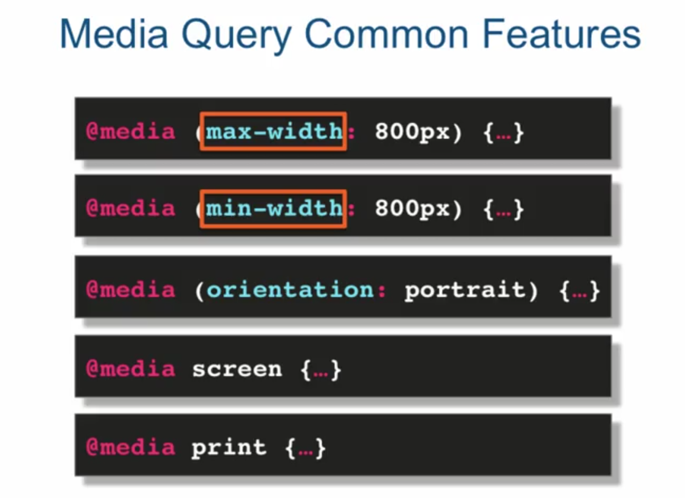
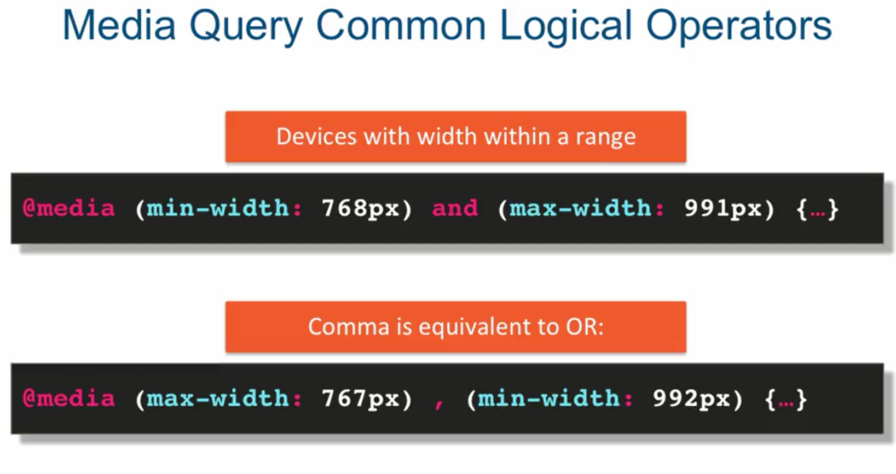
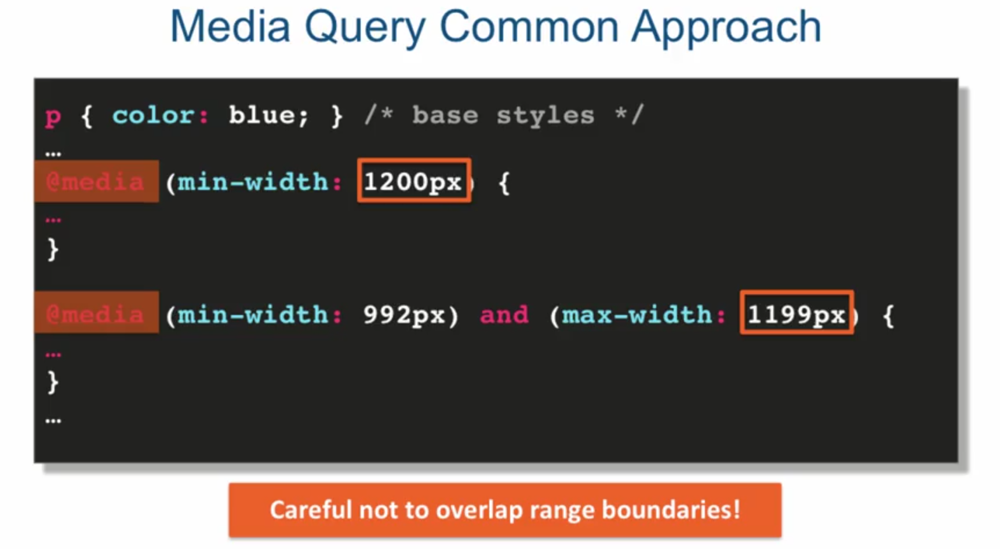

Media Queries



Summary
Basic syntax of a media query
@media (media feature)
@media (media feature) logical operator (media feature)
Remember not to overlap breakpoints
Usually, you provide base styling
Then, change or add to them in each media query